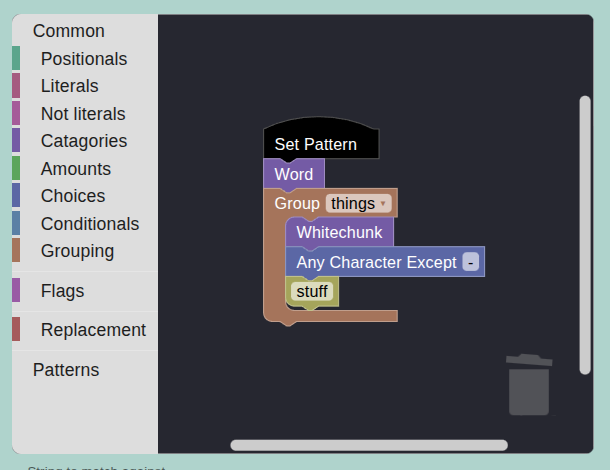

EZRegex
Origins
Once upon a time, I had a project that required a bunch of regular expressions. I kept getting annoyed with the archaic syntax. It’s annoying to work with, and it’s never gonna change, since it’s built into everything nowadays. It’s unreadable, hard to learn, the backslashes mess up string escaping, and you always end up forgetting to escape a space.
The Solution
The solution: write my own Python library, of course!
I wrote a quick library that overloaded operators to let you do things like word() + number() + literal("stuff") and it would “compile” that expression into \w+\d+stuff.
As I learned more I of course rewrote it a bunch of times, and now you can do things like word + number + anyof('a', 'b', 'c') + 'stuff'. There’s also a bunch of utilities for debugging, like a test() method, an invert() function (whcih I’ll get to), and it even supports multiple Regex dialects, since Python regex is slightly different than R, which is slightly different than Perl, etc. Granted, only a few dialects are implemented so far, but the framework is there.
Do Your Research First, not Last
It’s around this point (3 or 4 full-project rewrites in) that I decided maybe I should do some research and find out if this project already exists.
“Shouldn’t you do that at the start”, you ask? Yes. Yes you should. Because not only did a similar project exist, and not only did several similar projects exist, but an entire Github repo existed which is just a collection an explanation of similar projects.
This was disappointing (I thought I had that idea), but it also let me take inspiration from other projects and improve my own (for instance, instead of only using the + operator, do things like word.group() + ...).
Why am I special?
So what makes EZRegex different than the dozens of others?
Well, none of the others (that I could find) supported other Regex dialects other than Python. They also didn’t support inverting regular expressions…
Inverting
Ever have a regular expression, and you look at it and go “what the crap is that supposed to match?”? Well EZRegex is here to help! I wrote a funciton where you give it a regular expression, and it returns a string guarenteed to match the given regex.
Finally learning my lesson from before, I did find a couple libraries out there (xeger, sre-yield) which did similar things, but both fell short of what I wanted: * xeger (regex backwards) is obscure, and tends to return unprintable characters, which is suboptimal for debugging * sre-yield is decent, but is more focused on efficiency, and covering the whole space of things the expression could match
I specifically wanted strings that were easy to debug: for instance, if you pass “+” (a sequence of word characters, for the uninitiated) to it, I don’t want it to return afdslkjlcv, I want it to return an actual word. There were also a number of other improvements, such as limiting the number of characters given for * and +.
Luckily, I didn’t have to parse the Regex myself: you can just import the Python regex parser from the re module. From there, I just had to traverse the Abstract Syntax Tree (AST) and substitute my own debugging replacements. It took a lot of code, but ended up being fairly straightforward.
The Frontend
Being able to do word + number + '-' + group(digit) is pretty nice, but what’s even better than that? A GUI! It started off using streamlit (ah, we love streamlit), which worked pretty well, but I eventually ended up spending more time trying to hack it to do my bidding than actually using it. It also had several small, unfixable bugs, due to how it worked.
Enter: pyodide
In case you haven’t heard of pyodide, someone had the bright idea of compiling the Python interpreter to WebAssembly, so you can run Python code client-side in the browser. While this isn’t actually as useful as you would think, it’s absolutely perfect for this project. I was able to write a custom React frontend, host it on Github pages, and have it make calls to my Python library without the added overhead of a custom backend, or having to wait for network calls (enabling me to do things like update the output in real time as you type).
Again, why am I special?
There’s plenty of other websites that can help you write regular expressions. I would know, I took inspiration from a bunch of them. So what makes mine special? Well for one, it directly connects to a python library, so you can copy/paste code back and forth easily, and guarentee that it works the same. But mostly it’s:
Blockly
You every play with Scratch? It’s the thing that taught a lot of my generation about programming. Turns out, the JS library it’s built on is called Blockly, and it’s published (open source, I believe) by Google. It’s wonderful, I was able to embed Regex bubble code blocks directly into the page. Which, if you think about it, Regex is optimal canidate for bubble coding. Blocks that you can easily visualize and snap together, some of which can take parameters & scope? It’s perfect! Here’s a snapshot:

You have to admit, that’s easier to understand than \w+(?P<things>\s+[^\-]stuff). If you want to check it out, it’s live at ezregex.com.
Conclusion
In the end, I’m a little bit saddened, simply because while this project is great, it’s made a little bit more niche by modern LLMs. If you need a large, deterministic regular expression that you can debug, EZRegex is perfect. But for most small, simple patterns, you can probably just ask ChatGPT and it’ll generate you a working expression. Still, it’s my go to any time I need to think through an expression.